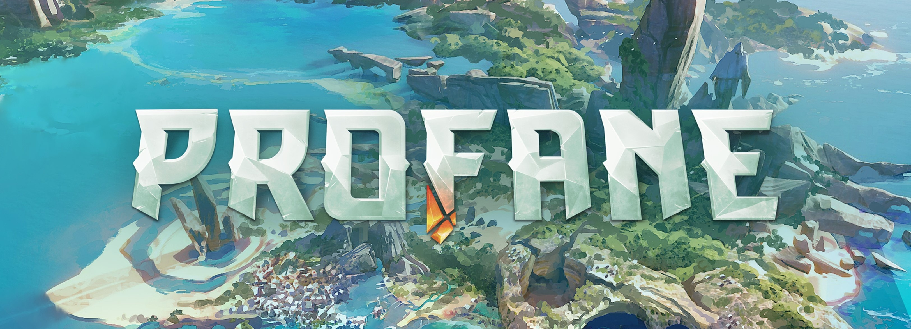
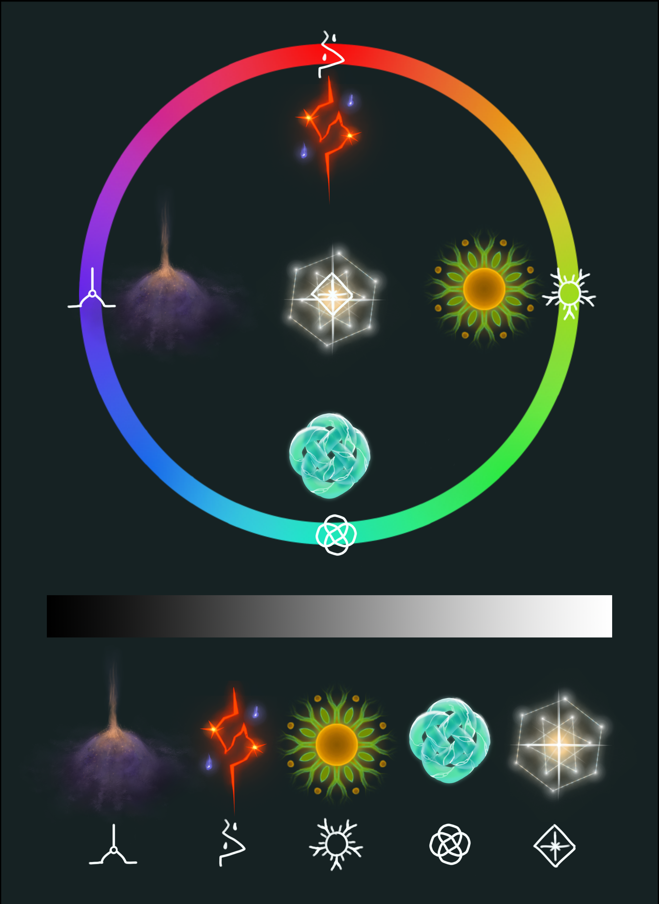
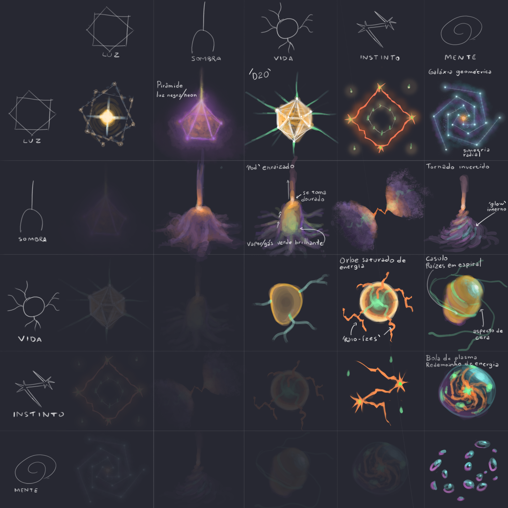
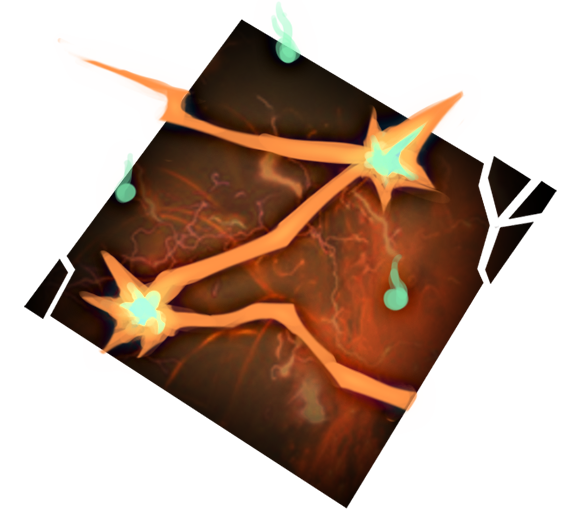
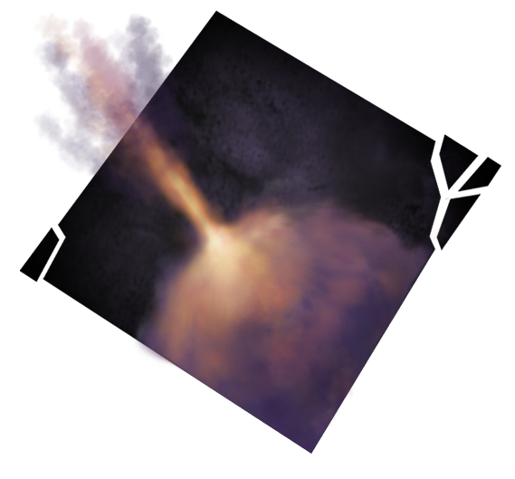
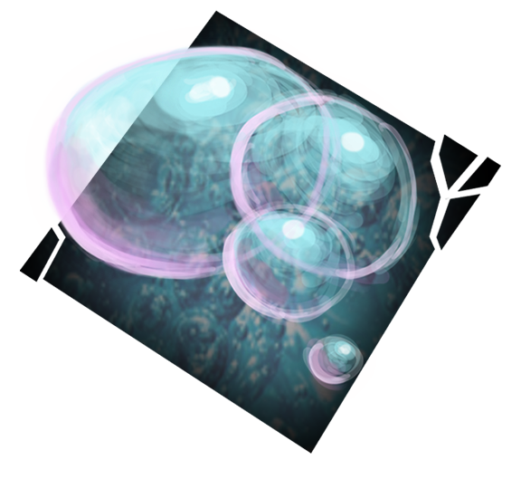
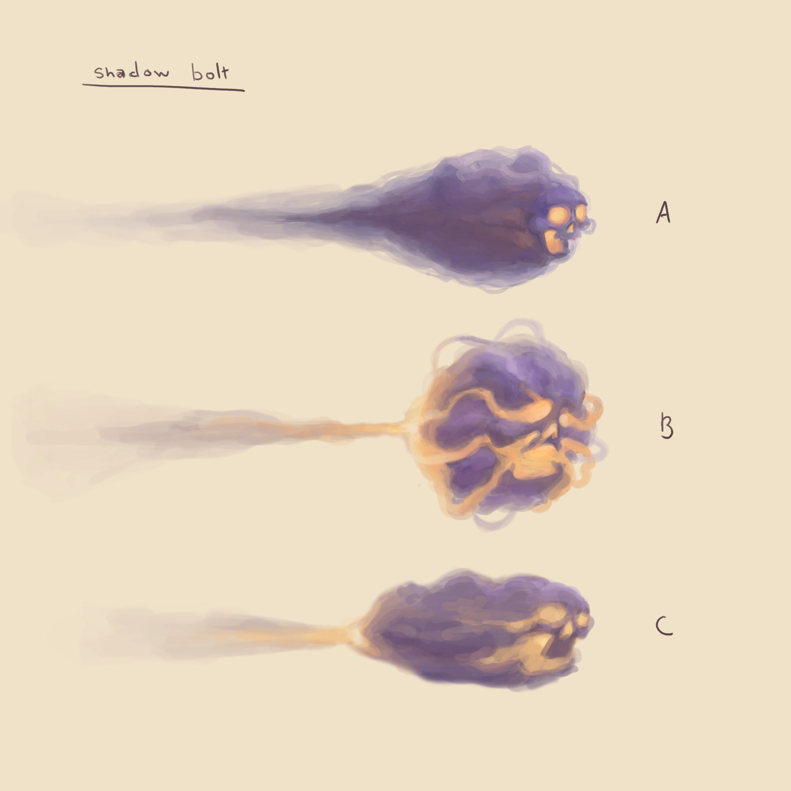
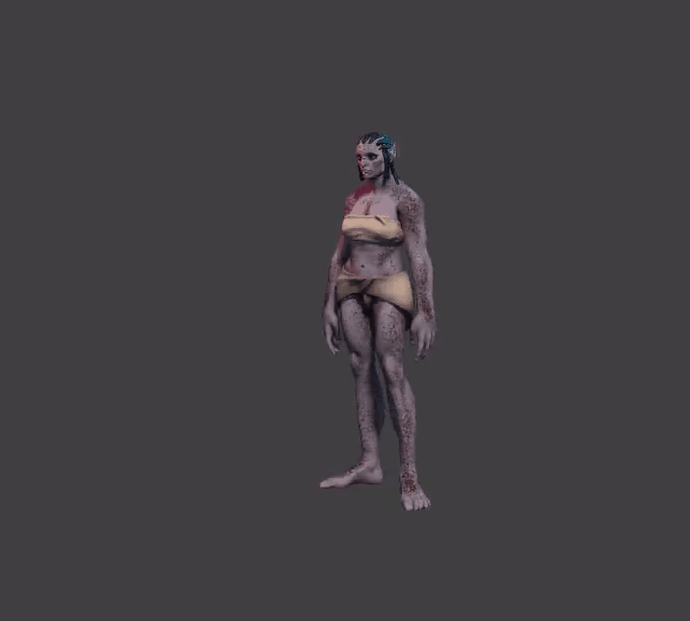

Profane

Profane is a sandbox, open-world MMORPG where I worked as Concept artist as well as Tech Artist.
As Concept Artist, I developed the visual language and ruleset that was meant to be the basis for the game's magic system and VFXs. During this period I colaborated heavily with the lore and game design teams as well as the P.O. to make sure the concepts were lined up with the game's overall vision, aesthetics and design, as well as providing ample room for improvements and additions in the future.




I also worked as tech artist helping develop the character animation pipeline and controller, as well as having been a key actor in the development of the character LOD system powered by Vertex Animation Textures (VATs) for crowd rendering.

The game is, as of the time of writing this, still not yet released, but you can check their updates on Twitter or Instagram.